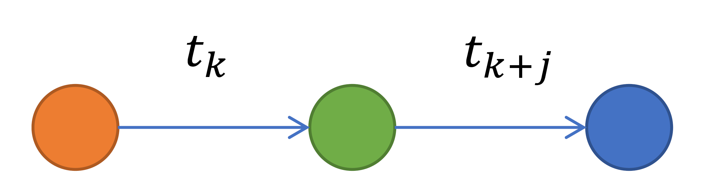

Motif Alpha
Returns the number of 2-edge temporal motifs for every node in the graph.
The algorithms identifies 2-edge-1-node temporal motifs; It detects one type of motifs:
_Type-1_: Detects motifs that exhibit incoming flow followed by outgoing flow in the form;

Implementation
For each vertex, for each incoming edge it checks whether there are any outgoing edges that occur after
Parameters
fileOutput(String) : The path where the output will be saved. If not specified, defaults to /tmp/PageRank
Returns
ID(Long) : Vertex IDNumber of Type1 motifs(Long) : Number of Type-1 motifs.